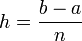
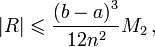
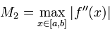
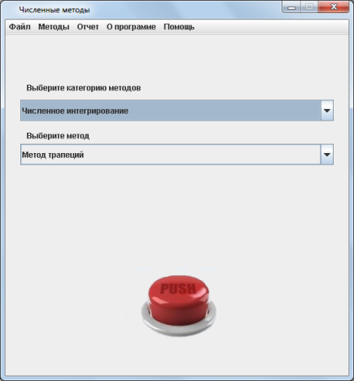
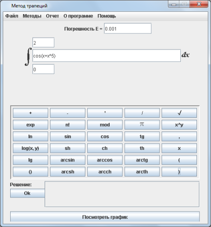
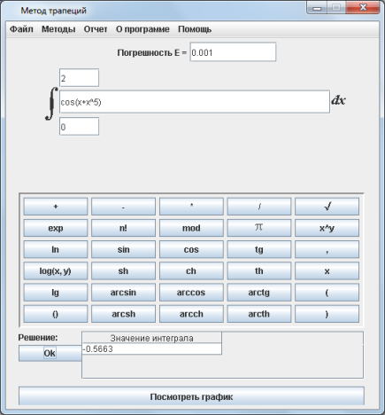
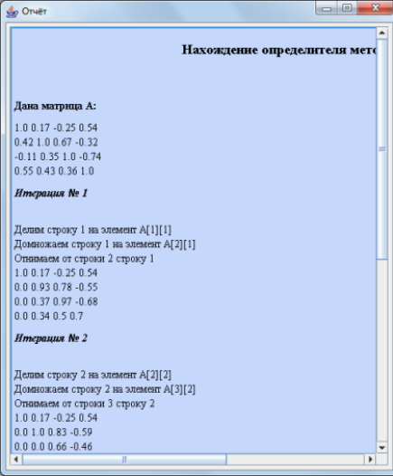

Вычисление опредленного интервала методом трапеций
Практическая часть
Теоретическая часть
Метод трапеций — метод численного интегрирования функции одной переменной, заключающийся в замене на каждом элементарном отрезке подынтегральной функции на многочлен первой степени, то есть линейную функцию. Площадь под графиком функции аппроксимируется прямоугольными трапециями.
Пусть дана непрерывная функция f(x) на отрезке [a;b]. Разобьем отрезок на n равных частей длиной h, где h равно:
Рассмотрим интервал [xi ; xi+1]. Площадь линейной трапеции на этом интервале, лежащей под кривой
f(x) вычисляется по формуле:

Погрешность формулы трапеций:


Метод трапеций быстро сходится к точному значению интеграла для периодических функций, поскольку погрешность за период аннулируется.
Практическая часть
Пошаговые действия |
Пояснения к действиям |
|  | 1. Заходим в программу. Появляется окно, показанное на рисунке. Выбираем категорию методов "Численное интегрирование". Выбираем метод "метод трапеций". Нажимаем кнопку "PUSH". |
|  | 2. Появляется окошко, показнное на рисунке слева. В соответсвующее поле вводим функцию, для которой нужно вычислить определенный интеграл. В поля, расположенные сверху и снизу функции, вводим интервал, на котором нужно вычислить интеграл. После этого нажимае кнопку "Ок", расположенную под словом "Решение". |
|  | 3. После этого, в поле, расположенном внизу экранной формы, появится значение искомого интеграла. |
 |
4. После того, как вы получили ответ, можно просмотреть график трапеций, по сумме площадей которых считается интергал. Для этого нужно нажать кнопку, расположенную под решением, в самом низу экранной формы - "Посмотреть график". Появится окно, показанное слева. Бегунок, расположенный вверху экранной формы увеличивает/уменьшает размер клеток сетки. |
|  | 5. После того, как вы получили ответ, можно просмотреть отчет, где предоставлено поэтапное решение. Для этого необходимо в главном меню программы, расположенном на верху экранной формы выбрать пункт "Отчет/Просмотр отчета". Вы увидите окно, расположенное слева. Также можно сохранить этот отчет нажав кнопку главного меню "Отчет/Сохранить отчет". |
 |
6. Если решение примера может пригодится вам в будущем, вы можете сохранить его с помощью конпки меню "Файл/Сохранить". В окне, которое появится(оно показано на рисунке слева) необходимо выбрать папку, в которую он сохранится и написать название. |